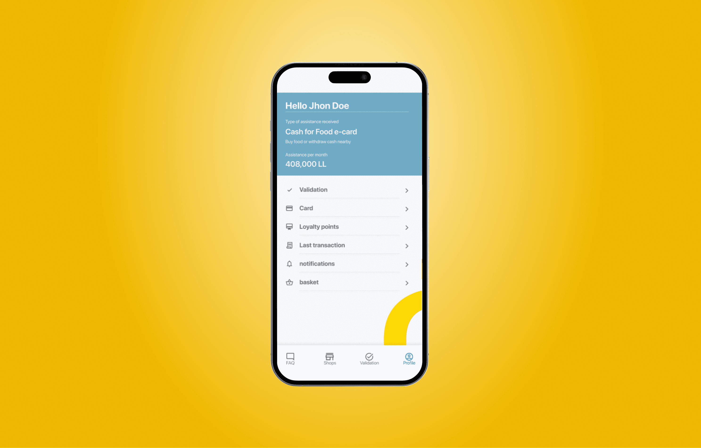
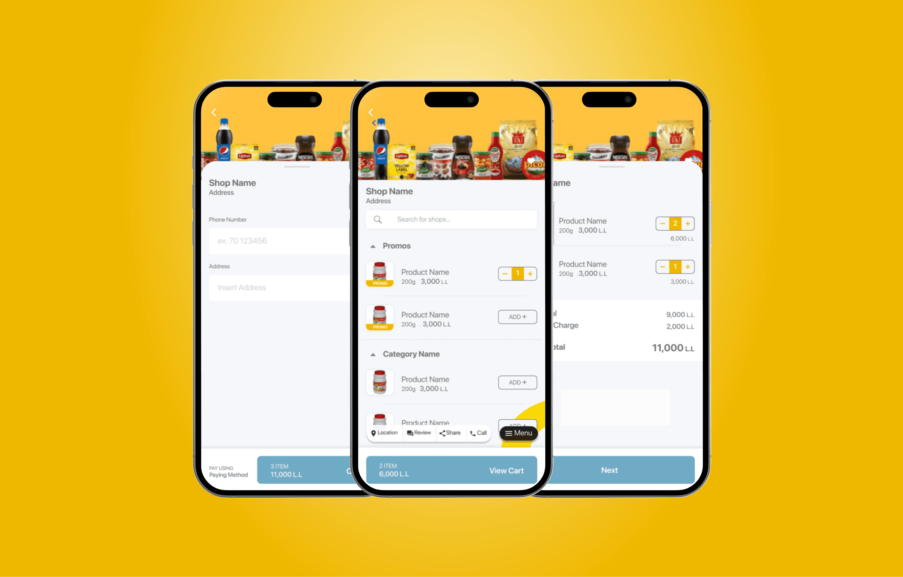
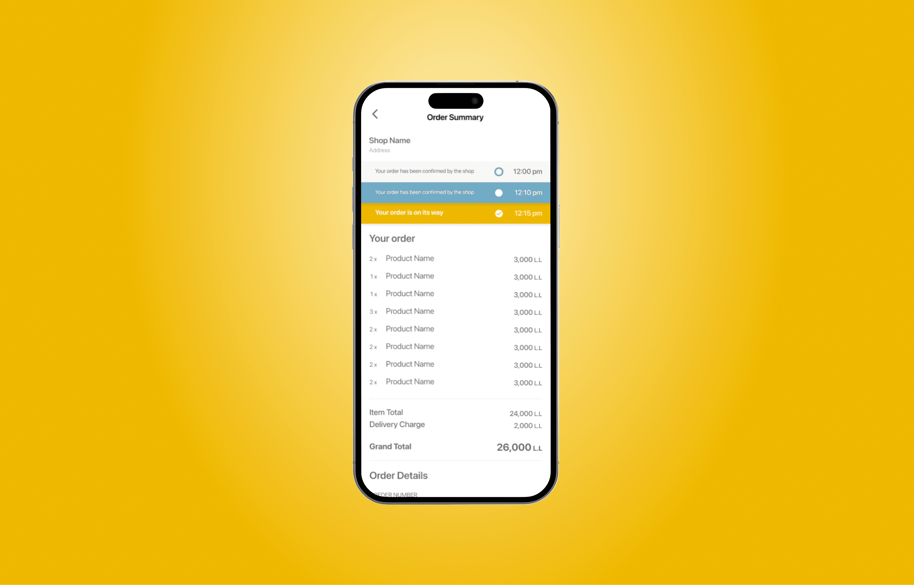
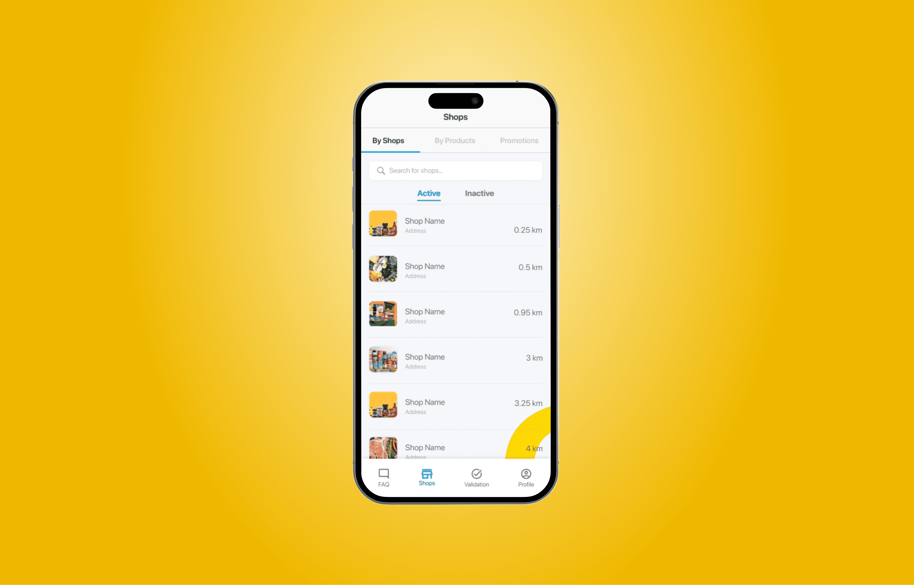

Dalili food assistance access for vulnerable communities
Designed an accessible mobile app for the UN World Food Programme helping refugees and local communities in Lebanon locate food assistance, shop at contracted retailers, and use Food e-cards.

Dalili app overview with location-based food assistance and e-card access
Designing for users with limited digital experience.
Dalili served some of the most vulnerable people in Lebanon: refugees and low-income communities who needed to locate food assistance but often had limited digital literacy, low literacy in general, or were using shared or low-end devices.
The design challenge wasn't just functional it was deeply human. Every interaction pattern had to work for a user who may never have used a smartphone app before, in conditions of stress and uncertainty.
The app needed to be intuitive enough that no instruction manual was necessary, and accessible enough that literacy was never a barrier to access.
Tested with the people it was built for.
I took a working prototype into the field and had beneficiaries test it directly, gathering feedback from the actual low-literacy, low-connectivity users the app was built for. Their input drove real design changes, most notably making the map the home screen instead of a menu, because that's how users actually oriented themselves. Designing with users in their real context, rather than assuming, is what made the app usable for people with limited digital experience.

Location-based map view for finding contracted food assistance shops nearby

In-store browsing with icon-heavy UI designed for low-literacy users
Accessibility and low-literacy UX as first principles.
Core flows
I led the UX and UI design for Dalili's three primary flows: locating nearby contracted shops on a map, browsing and purchasing items in-store, and ordering remotely via the Food e-card system. Each flow was designed with heavy icon usage, minimal text dependency, and large tap targets.
Accessibility-first design
Color contrast, icon clarity, and step-by-step confirmation patterns were prioritized throughout. The visual language was designed to communicate function without relying on labels wherever possible. We tested with real beneficiaries in the field to validate comprehension.
Motion and communication
In addition to the product design, I produced motion graphic campaigns distributed across WFP's regional digital channels to drive awareness and adoption of the app among the target communities.
Where the design earned its keep.
Icons over text, everywhere possible
The obvious approach was translating the UI into Arabic and calling it accessible. Field visits told a different story: a meaningful share of beneficiaries could not read comfortably in any language. So the bet was an icon-first visual language where every core action is recognizable without reading a single word. Text became a supporting layer, not the primary one.
Map as the home screen
Early wireframes opened on a menu of features. Testing with beneficiaries showed the first question was always the same: where can I use my card near me? We made the map the home screen and moved everything else behind it. Task success on first sessions improved immediately and the change cost nothing to build.
Confirmation over speed
For users spending limited assistance funds, a wrong purchase is not an inconvenience, it is a missed meal. Every transaction got an explicit step-by-step confirmation pattern even though it added taps. We traded efficiency for certainty deliberately, the opposite of what you would do in a typical e-commerce flow.

Food e-card ordering flow with step-by-step confirmation patterns

Onboarding designed to work without prior smartphone experience
Home screen with large tap targets and minimal reliance on text labels
Reaching the people who needed it most.
Dalili increased beneficiary engagement with the WFP food assistance program, drove higher Food e-card utilization rates, and improved user satisfaction scores among communities in Lebanon. The accessibility-focused design approach meant the app worked for users regardless of digital literacy level.